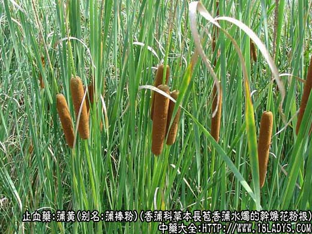
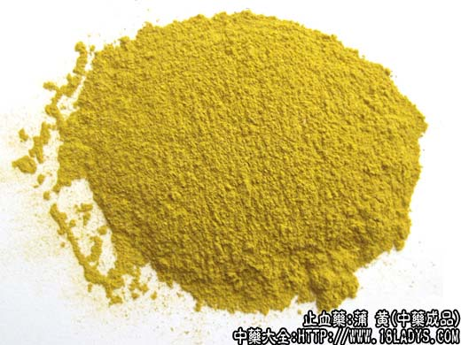
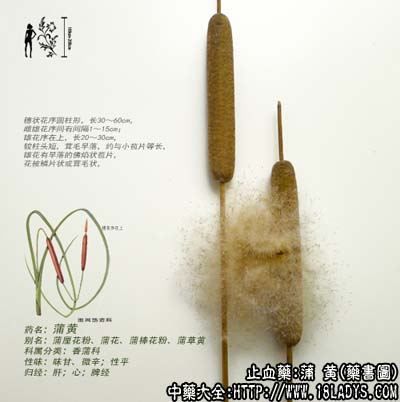

本品为常用中药。始载《神农本草经》，列为上品。商品分净蒲黄与草蒲黄两种。
别名：蒲棒粉、卜黄。
来源：为香蒲科多年生草本植物长苞香蒲水烛或同属多种植物的干燥花粉或带有花药、花丝的混合物。野生于浅水沼泽或溪池水边。
产地：主产于江苏、安徽、河南、内蒙古、黑龙江等地，其它地区大部均有生产。
性状鉴别：净蒲黄：为鲜黄色的细小花粉粒，呈粉末状态，质轻。用手捻之有滑润感而松散，遇风飞扬，投入水中浮于水面。用放大镜观察，呈扁圆形小颗粒。气微，味淡。
草蒲黄：为花粉、花药及花丝的混合物，呈棕黄色，除粉末状花粉外并丝毛状纤维性花药及花丝，显粗糙、轻泡而不光滑，手捻易成团。气微，味淡。
净蒲黄以鲜黄色，粉细，质轻，光滑，不含杂质者为佳。
草蒲黄以棕黄色，含花药，花丝，不含其它杂质者为佳。
主要成分：含固甾醇、异鼠李亭。
药理作用：1、止血：为收敛性止血药，能缩短出血时间；
2、收缩子宫，故能行血消瘀；
3、利尿：临床观察有利尿作用。又动物试验对豚鼠实验性结核病有疗效。
炮制：生用或炒炭。
性味：甘，平。
归经：入肝、心包经。
功能：除热，行血，消瘀，利水，炒炭止血。
主治：经闭，痛经，产后瘀血作痛，跌打损伤，尿涩作痛及一切血症。
临床应用：为常用的祛瘀药和止血药。
1、用于治疗产后血瘀、恶露不下、小腹作痛，常配五灵脂，方如失笑散。此方行血散瘀止胀痛和清除恶露的效果比较确实，可作为化瘀的基本方。对其它瘀痛也适用。如产后因子宫收缩不良而出血，可配丹参、炮姜炭等止血。以上两种情况无法祛瘀或止血，蒲黄所起的作用大体上主要为收缩子宫。
2、治疗血淋，蒲黄是常用药，协助小蓟、滑石等，或配冬葵子、生地，治膀胱炎或尿道炎引起的血尿、小便不利、尿道作痛。方如蒲黄散。
3、用于治疗便血属慢性结肠炎者，大便浓血样、腹部闷痛，可用炒蒲黄配五灵脂、煨葛根、煨肉豆蔻等。
此外，生蒲黄末用蜜糖调敷，可治疮疡之肿痛。
使用注意：1、蒲黄生用行血祛瘀，炒用收敛止血（但生用也能止血）。一般用生品较多，出血兼有瘀血者内蓄者，可生、炒各半同用；
2、蒲黄用于实证出血适宜；
3、蒲黄能收缩子宫，故孕妇慎用。
用量：4.5~9g可研末冲服。如入煎剂，则包煎较好。
处方举例：失笑散（《局方》）：炒蒲黄3g，生蒲黄3g，炒五灵脂6g，研细末，水酒各半煎数沸后饮服。
蒲黄散（《证治准绳》）：蒲黄、冬葵子、生地各15g，共为细末，每服3g，水煎温服。
注：净蒲黄与松花粉类似，易混淆。但松花粉为淡黄色，质较重而更光滑易流动，颗粒在放大镜下观察呈圆球形，气微香，味带油腻感。